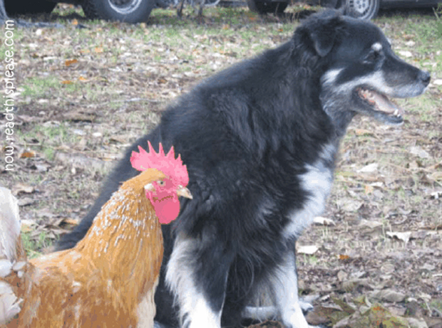

For the love of the bird!

Christopher George Latore Wallace (May 21, 1972 – March 9, 1997), better known by his stage names The Notorious B.I.G., Biggie, or Biggie Smalls,[1] was an American rapper. He is consistently ranked as one of the greatest and most influential rappers of all time.[2] Wallace was raised in the Brooklyn borough of New York City. When he released his debut album Ready to Die in 1994, he became a central figure in the East Coast hip hop scene and increased New York's visibility in the genre at a time when West Coast hip hop was dominant in the mainstream.[3] The following year, Wallace led his childhood friends to chart success through his protégé group, Junior M.A.F.I.A. While recording his second album, Wallace was heavily involved in the growing East Coast–West Coast hip hop feud. On March 9, 1997, Wallace was killed by an unknown assailant in a drive-by shooting in Los Angeles. His double-disc album Life After Death, released 16 days later, rose to No. 1 on the U.S. album charts and was certified Diamond in 2000 by the Recording Industry Association of America, one of the few hip hop albums to receive this certification.[4] Wallace was noted for his "loose, easy flow",[5] dark semi-autobiographical lyrics and storytelling abilities, sometimes changing his pitch on songs. Two more albums have been released since his death. He has certified sales of 17 million units in the United States.